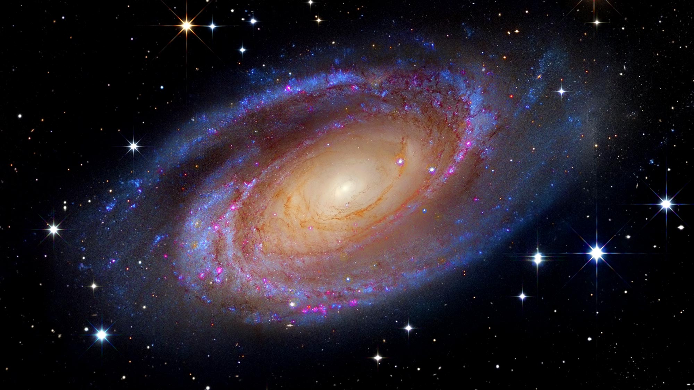
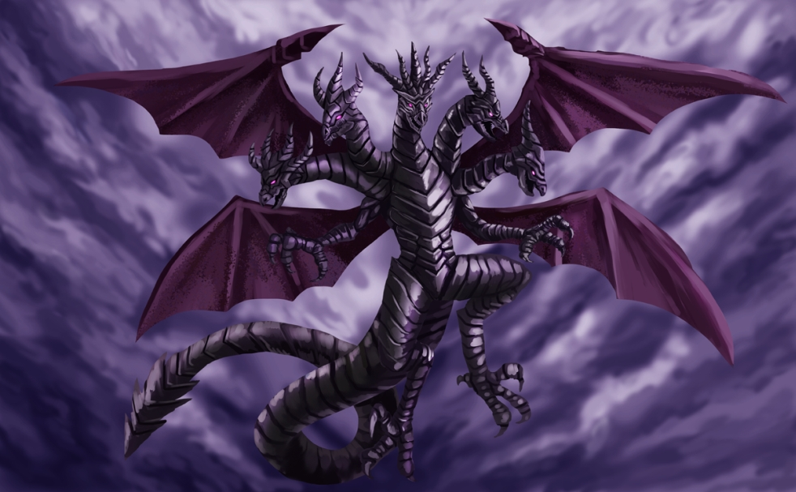
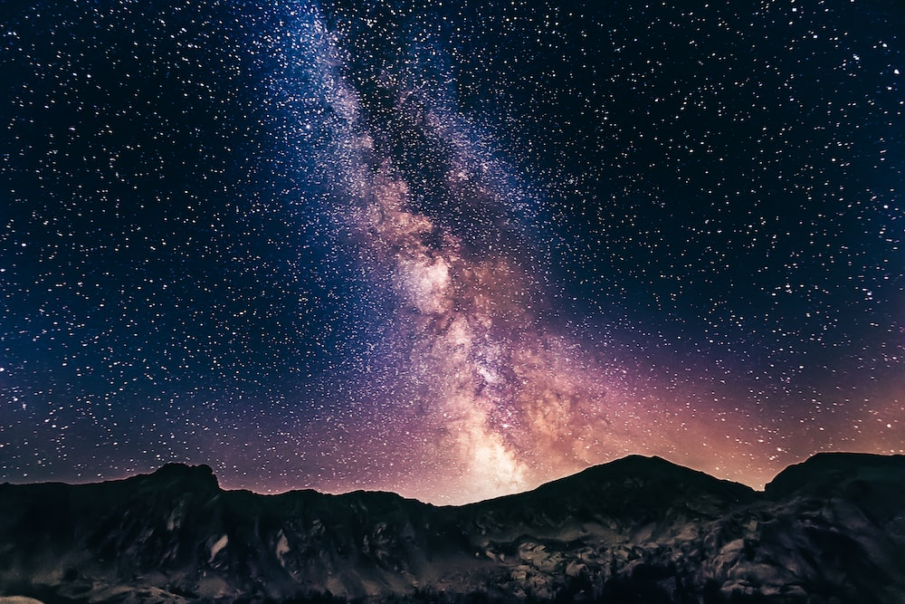

ირმის ნახტომი
აგებულება და სტრუქტურა

გალაქტიკა შედგება ელიფსური ფორმის ცენტრისგან, რომელიც გარშემორტყმულია გაზისა და კოსმიური მტვრის დისკით,
ხოლო ვარსკვლავები ქმნიან ოთხ მკაფიო სპირალისებურ მკლავს. ირმის ნახტომის დიამეტრი დაახლოებით 30 ათასი პარსეკია
(100 000 სინათლის წელი) და მისი სისქე კი დაახლოებით 1000 სინათლის წელიწადია.
გალაქტიკა შეიცავს სულ მცირე 200 მილიარდ ვარსკვლავს
(თანამედროვე შეფასება მერყეობს
200-დან 400 მილიარდ ვარსკვლავამდე).
2009 წლის იანვარის მონაცემებით გალაქტიკის მასა არის მზის მასის 3×1012, ანუ 6×1042 კგ.
მისი ძირითადი მასა მოდის არა ვარსკვლავებისა და ვარსკვლავთშორისი აირის, არამედ უჩინარი შავი მატერიის ჰალოზე.
მითოლოგია

ბაბილონის ეპიკურ პოემაში ირმის ნახტომი იქმნება პირველად მარილიანი წყლის დრაკონის ტიამატის
მოწყვეტილი კუდიდან, რომელიც ცაში დგას მარდუკის, ბაბილონის ეროვნული ღმერთის მიერ, მისი მოკვლის
შემდეგ. ოდესღაც ითვლებოდა, რომ ეს ამბავი დაფუძნებული იყო უფრო ძველ შუმერულ ვერსიაზე, სადაც ტიამატი
მოკლულია ენლილ ნიპურის მიერ. მაგრამ ახლა ითვლება, რომ ეს არის ბაბილონის პროპაგანდისტების გამოგონება,
რათა მარდუქი ეჩვენებინათ როგორც. აღემატება შუმერულ ღვთაებებს.
ირმის ნახტომის გარეგნობა

ირმის ნახტომი ჩანს, როგორც თეთრი სინათლის ბუნდოვანი ზოლი, დაახლოებით 30° სიგანით,
რომელიც თაღოვანი ღამის ცაზეა.მიუხედავად იმისა, რომ მთელ ცაზე ყველა ინდივიდუალური
შეუიარაღებელი ვარსკვლავი ირმის ნახტომის გალაქტიკის ნაწილია, ტერმინი „ირმის ნახტომი“
შემოიფარგლება სინათლის ამ ზოლით.სინათლე წარმოიქმნება გადაუჭრელი ვარსკვლავების
და სხვა მასალის დაგროვებიდან, რომლებიც მდებარეობს გალაქტიკური სიბრტყის მიმართულებით.
ზოლის ირგვლივ უფრო ნათელი უბნები ჩნდება რბილი ვიზუალური ლაქების სახით, რომლებიც ცნობილია
როგორც ვარსკვლავური ღრუბლები. მათგან ყველაზე თვალსაჩინო არის დიდი მშვილდოსანი ვარსკვლავის
ღრუბელი, გალაქტიკის ცენტრალური ამობურცვის ნაწილი.ბნელი რეგიონები ზოლში, როგორიცაა დიდი რიფტი
და ქვანახშირი, არის ადგილები, სადაც ვარსკვლავთშორისი მტვერი ბლოკავს სინათლეს შორეული ვარსკვლავებიდან.
სამხრეთ ნახევარსფეროს ხალხებმა, ინკასა და ავსტრალიელი აბორიგენების ჩათვლით, ამ რეგიონებს ბნელი ღრუბლების
თანავარსკვლავედებად ასახელებდნენ.ცის ტერიტორიას, რომელსაც ირმის ნახტომი ფარავს, აცილების ზონას უწოდებენ.